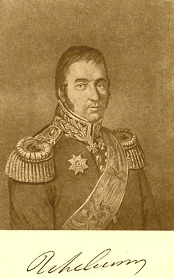

Воцарение Павла было ознаменовано немедленной и крутою ломкою всех порядков екатерининского царствования, производившейся без всякой системы, скорее под влиянием чувства, нежели в результате тщательно разработанной рациональной схемы. Поспешность, с которой Павел приступил к осуществлению мероприятий, которые он считал полезными для преуспевания флота в гатчинские годы и реализации которых мешала его матушка, а точнее ее окружение, как считает Ф.Ф. Веселаго «имела ту невыгоду, что не давала возможности хорошо обсудить все следствия новых постановлений, которые иногда представляли большие затруднения в приложении их к делу.» Увлеченный новыми реформами, император хотел в каждом человеке из своего окружения, в каждом служащем и чиновнике видеть пылкого сторонника своей деятельности. Поэтому любое промедление и тем более небрежение в исполнении отдаваемых приказов вызывало у него ярость, и аукалось для виновного строгими взысканиями, а то и более тяжкими последствиями: арестом и заключением в крепость. Царь не разбирался, прав ли, виноват ли человек во вменяемом ему прегрешении и, не разбирая званий и чинов, раздавал наказания налево и направо. Заслуженный боевой адмирал Ф.Ф. Ушаков получил строгий высочайший выговор «за неимение во время тумана порядочных сигналов и предписанных уставом предосторожностей». Без колебаний был снят и командующий Черноморским флотом адмирал Н.С. Мордвинов за взрыв бомбового погреба на Глубокой пристани. Подобных примеров можно приводить множество.
Путём всех этих быстрых и зачастую немотивированных смен, путём вольного и невольного удаления заслуженных деятелей екатерининского царствования возвысились и стали во главе правления люди без способностей и знаний, но зато обладавшие угодливостью и исполнительностью, доведёнными до последней степени, и по преимуществу набранные из так называемых гатчинских выходцев, вроде Аракчеева, Кутайсова, Обольянинова и т. п. Конечным итогом такого хода дел было полное расстройство всего административного механизма и нарастание всё более серьёзного недовольства в обществе.
Не дали ожидаемого эффекта и принимаемые Павлом меры против преступлений в экономической сфере. Ревизии, проведенные в начале царствования Александра I, выявили большое число злоупотреблений в этой области. Павел не смог противопоставить что-либо весомое укоренившейся привычке присвоения казенного имущества.
Но самый большой вред флоту был нанесен все же офицерским кадрам. За пять с небольшим лет флот лишился опытных, смелых, самостоятельно мыслящих кадров, что предопределило его застой, а затем и деградацию в годы правления следующего монарха.
Восшествие на престол Александра I сопровождалось радикальным пересмотром роли и значения флота в проведении внешней политики государства. Одним из первых организационных мероприятий нового императора явилось преобразование Государственной Адмиралтейств-коллегии в Министерство военных морских сил и учреждение Комитета для приведения флота в лучшее состояние („Комитет образования флота») под председательством графа Александра Романовича Воронцова; членами его были назначены известные моряки. Комитету особым приказом императора поручалось установить состав и размеры флота, "сообразуясь с морскими силами соседних государств". Комитет пришел к заключению о приоритете сухопутных сил и ограничении задач, решаемых военным флотом.
Эти выводы полностью соответствовали взглядам Александра 1 на второстепенность флота и были недвусмысленно высказаны в известном докладе графа А. Р. Воронцова:
„По многим причинам, физическим и локальным, России быть нельзя в числе первенствующих морских держав, да в том ни надобности, ни пользы не предвидится. Прямое могущество и сила наша должна быть в сухопутных войсках; оба же сии ополчения в большом количестве иметь было не сообразно ни числу жителей, ни доходам государственным. Довольно если морские силы наши устроены будут на двух только предметах: обережение берегов и гаваней наших на Черном море, имев там силы соразмерные турецким, и достаточный флот на Балтийском море, чтобы на оном господствовать. Посылка наших эскадр в Средиземное море и другие экспедиции стоили государству много, делали несколько блеску и пользы никакой".
В этом мнении Воронцова нельзя не видеть предубежденного, чисто английского взгляда на развитие русского флота, так как Воронцов, живя долго в Англии, конечно, ясно усвоил себе именно английский взгляд, не видя в нем зла для своей родины.
К чему это привело, можно узнать из одной любопытной книги. Любители «Юноны и Авось» наверняка слышали о славном нашем мореплавателе, выдающемся моряке, исключительно образованном по своему времени человеке Василии Михайловиче Головнине. Кто не смотрел этот мюзикл, тот возможно читал дневники Головнина о плавании шлюпа «Диана».

Так вот этот уважаемый адмирал в 1824 г. под псевдонимом «Мичман Мореходов» написал небольшую книгу: «О состоянии Российского флота в 1824 году». Издана она была только в 1861 году. Книга достойна быть прочитанной по многим причинам, но мы здесь процитируем из нее только один отрывок.
«Если бы хитрое и вероломное начальство, пользуясь невниманием к благу отечества и слабостию правительства, хотело, по внушениям и домогательству внешних врагов России, для собственной своей корысти, довести разными путями и средствами флот наш до возможного ничтожества, то и тогда не могло бы оно поставить его в положение более презрительное и более бессильное, в каком он ныне находится. Если гнилые, худо и бедно вооруженные и еще хуже и беднее того снабженные корабли, престарелые, хворые, без познаний и присутствия духа на море флотовожди, неопытные капитаны и офицеры, и пахари, под именем матросов, в корабельные экипажи сформированные, могут составить флот, то мы его имеем. О таком справедливо изображенном мною состоянии своего флота Россия не знает, но иностранцам оно известно в подробности: они смеются и удивляются, не понимая на какой конец мы бросаем (конечно не от избытка государственных доходов) по 20-ти миллионов в каждый год, чтоб истреблять леса и превращать их в корабли, тотчас гноить в Кронштадте без всякой жалости, доставляя лишь случай небольшому числу высших чиновников пресыщаться и богатеть, а низших классов разночинцам иметь хлеб насущный, расхищая казну. Англичане, в одном периодическом сочинении, весьма основательно заметили, что Россия содержит флот свой не для неприятелей, а для приятелей; чрез сие они хотели сказать, что она старается уверить невежествующих своих подданных, будто и в самом деле имеет морские силы, которые однакож в существе столь ничтожны и презрительны, что не могут произвести никакого влияния над действиями других держав на море.»
Больше добавить к характеристике военного флота России в период царствования Александра I нечего.